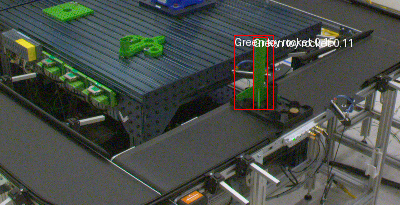
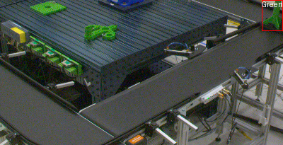
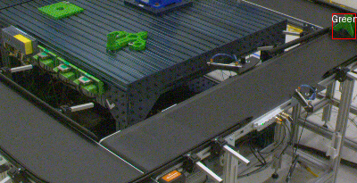

MOCKUP · 화면 목업데이터 기준 v81 (원본 320개 → 분석대상 316개)검토의견 반영판
01 · 종합 현황
라인 전체 상태 — 진입 화면
품질관리자·평가 청중이 처음 보는 화면. 조립 카운트 → 분류 성능 → 클래스 분포·근거 지표 순으로 내려간다.
총 조립 시도
320개
라벨오류 의심 4개(5_10·5_11·5_28·5_265) 제외 시 316개
근거: 조립 순서상 물리적으로 불가능한 신호 조합 (상세: 아래 NoBody2 카드)
※ 5_40은 별도 경계 케이스 — 라벨오류 아님
성공 (정상)
156
전체의 48.8%
실패 (결함)
164
전체의 51.2%
실패율
51.2%
3개 결함 유형 합산
정확도
0.982
GroupKFold · 세션 분리
2023년 세션5 검증 · 규칙기반 최종판 · n≈273
탐지 균형 (macro recall)
0.979
GroupKFold · 세션 분리
2023년 세션5 검증 · 규칙기반 최종판 · n≈273
결함 탐지율
99.6%
3중결손 100% · NoBody2 92.2%
판정 방식
규칙기반 계층 분류기 ML은 보조/부록 — 주력 판정에 관여 안 함
클래스 분포
4개 결함 유형 · 세션1~5 원본 전체 320개 기준(라벨오류 제외 전)
Normal
156
NoNose
59
NoNose,NoBody2
51
3중결손
54
정상 vs 결함
전체 대비 결함 비율
정상 156개 (48.8%)
결함 164개 (51.2%)
혼동행렬 — 규칙기반 단독
GroupKFold(세션1~4 학습 → 세션5 검증), 273개 기준
실제 \ 예측
NoNose
+NoBody2
3중결손
Normal
recall
NoNose
29
0
0
1
96.7%
NoNose,NoBody2
2
47
1
1
92.2%
3중결손
0
0
54
0
100%
Normal
0
0
1
137
99.3%
이전 버전은 이 지점(+NoBody2 → 3중결손 오분류 17건)이 최대 약점이었으나, Body1·Body2 판정 방식을 window_max+크기임계값·사이클별 타이밍 밀림 보정·창 겹침 보정 3단계로 개선해 17건 → 1건으로 줄임(모델 개선은 이걸로 종료). 지연보정·gap체크 개별 기여도를 따로 확인한 결과 지연보정이 8건, gap체크가 1건을 각각 독립적으로 해결했고 상호작용 0건 — 두 보정이 서로 다른 문제를 겨냥한다는 뜻. 이와는 별개로 특이 사례 5건을 추적 중인데, 3건(5_10·5_11·5_28)은 5_265와 같은 유형(조립 순서상 물리적으로 불가능한 신호 조합)의 라벨오류 의심 후보, 1건(5_40)은 R01 투입은 정상 타이밍(15.39초, 라벨오류 제외 전 원본 320개 사이클 중앙값 15.41초와 거의 동일)이었음에도 R03 신호 자체가 원인 불명으로 지연되어 나타나는 경계 케이스, 1건(5_240)은 R01 정착 시각 계산이 원래 50초 탐색구간 경계에 걸려 NaN이었던 것을 60초로 늘려 해결(정착 51.6초 확인, 다른 319개엔 부작용 없음)했음에도 R03 신호가 R01과 무관하게 100초 넘게 홀로 늦게 나타나는 신규 유형의 경계 케이스로 확인됨(전부 라벨오류로 단정하지 않음). ※ 위 '총 조립 시도' 카드의 라벨오류 제외 4개(5_10·5_11·5_28·5_265)와 여기 5건(5_10·5_11·5_28·5_40·5_240)은 구성이 다릅니다 — 5_40·5_240을 라벨오류에 포함할지는 팀 확인이 필요한 남은 과제입니다.
피처 중요도 Top 5 (SHAP)
Block A 공식 78개 피처셋 기준
r04_grab_count
.031
R02_Pot_min
.026
R03_Load_mean
.026
R02_Pot_std
.024
r03_nose_fwhm
.024
참고용 — 주력 판정 로직은 규칙기반이며, SHAP은 부록 페이지에서 상세 확인.
02 · 불량 발생 시점 — 핵심
언제, 어떤 신호로 불량이 드러나는가
경과시간(초) 축 위에서 불량 유형별 신호가 정상 밴드를 벗어나는 지점을 본다. Nose 하나가 아니라 Body1·Body2·Nose 3개 신호를 모두 보여준다 — 결손이 많을수록 더 이른 시점에 갈라진다.
R03 조립력 — Normal vs NoNose
정상 밴드(음영) 대비 선택 유형 평균 파형 · 분기 구간 강조 · 시간축: R01 투입완료 시점 기준 경과초 (사이클마다 다른 투입 소요시간 영향 제거, 2026-07-27 튜터 피드백 반영)
정상 밴드
선택 유형 평균 파형
분기 시점
💡NoNose는 (투입완료 후) 85초 부근(Nose 조립 구간)에서 정상 밴드를 벗어난다 — 완성(투입완료 후 약 105초) 전 19% 시점에 조기 판정 가능.
불량 유형별 분기 시점 요약
결손이 많을수록(3중결손) 더 이른 시점에 신호가 갈라진다 — 조기 경보의 핵심 근거
85초
NoNose 단독 — Nose 봉우리 소실 (투입완료 기준, R03 원래 93~100초 창)
71초
+NoBody2 — Body2 봉우리부터 소실 (투입완료 기준)
58초
3중결손 — Body1 봉우리까지 전부 소실 (투입완료 기준, 가장 이른 경보)
03 · 대표 사례
결론이 개별 사이클에서도 보이는가
전수 탐색이 아니라 준비된 대표 사례로 설명한다. 사이클을 선택하면 판정 근거가 함께 뜬다.
사이클 5_100 — Normal
R03 조립력 파형 — 정상 대비 어디서 갈리는지
판정 결과
실제 라벨Normal
규칙기반 판정Normal
판정 일치일치
근거 신호 구간Body1/Body2/Nose 전 봉우리 존재
4개 봉우리(투입완료 기준 51·64·77·88초)가 모두 정상 범위 — 결손 신호 없음으로 규칙기반이 Normal 판정.
04 · 이미지 활용
결함 이미지 — Slack 알림 첨부용 대표 사진
이미지를 판정(분류)에 쓰는 것이 아니라, 결함이 발생했을 때 n8n→Slack 알림에 참고 사진으로 첨부하는 용도로만 사용한다. 실제 그 사이클을 촬영한 사진이 아니라, 해당 결함 유형의 대표 예시 사진이다.
적용 흐름
State9 이미지를 알림에 붙이기까지 3단계 — 전부 적용 완료
✓
이미지 폴더 구조 확인
State9 zip(Cycle_state_9) 안에 Test/Train 하위로 결함 라벨별 폴더(NoNose · NoNose,NoBody2 · NoNose,NoBody2,NoBody1)가 이미 정확히 분류되어 있음을 확인
✓
대표 이미지 캐싱
폴더마다 첫 파일 1장만 읽어 base64로 미리 캐싱 — 매 사이클마다 zip을 다시 열지 않고 재사용
✓
n8n → Slack 알림에 첨부
결함 판정 시 준실시간 알림 메시지에 이미지 첨부 — "실제 이 사이클 사진 아님, 예시 사진" 안내 문구 동시 표시 (상세: 06 부록)
State4 / State9 정의
공정 단계 정의와 촬영 시점 라벨을 구분해서 서술
State
공정 정의
State4
조립 초반 (Body1 결합 구간)
State9
완제품 이송 · 트레이 집기 — 결함 여부와 무관한 공통 체크포인트
State9 시점에 촬영된 사진 중 하나가 “전체결손” 라벨일 뿐, State9 자체가 “전체결손 상태”를 의미하지 않음 — 발표 중 질문 대비 필수 구분.
대표 이미지 선정 기준 (한계 · 팀 검토 필요)
현재: 폴더 내 첫 파일을 그대로 대표 이미지로 사용
지금은 IMAGE_FOLDER_MAP 폴더별 파일 목록의 첫 번째 파일을 기계적으로 선택하고 있음 — 화질·구도가 대표성 있는 사진인지는 아직 검토 전. 더 대표성 있는 사진으로 교체할지는 팀 논의 대기 중인 남은 과제.
대표 이미지 — 결함 유형별 예시 (Cycle_state_9 · Test)
n8n·Slack 알림에 실제로 첨부되는 이미지와 동일 소스 — 경로만 참조하는 목업이며, 실제 파일은 리포지토리 images/에 커밋 후 자동 표시됨

🖼이미지 파일 대기 중images/sample_nonose.png
NoNose

🖼이미지 파일 대기 중images/sample_nonose_nobody2.png
NoNose,NoBody2

🖼이미지 파일 대기 중images/sample_triple.png
3중결손
이 사진들은 판정 근거가 아니라 알림 첨부용 참고 자료다. 센서(R03) 판정만으로 결함 유형이 확정되며, 이미지는 그 결과를 사람이 눈으로 참고하기 쉽게 붙여주는 역할만 한다.
부록 · 모델 검증
규칙기반을 왜 주력으로 삼았나
검증이 실패한 게 아니라, 데이터 구조가 규칙기반을 요구했다 — ML은 GroupKFold(세션 분리)에서 실패했지만, 규칙기반은 통과했다.
검증 전략 비교 — StratifiedKFold vs GroupKFold
같은 데이터, 같은 모델이라도 분할 방식에 따라 결과가 완전히 달라진다
분할 방식
의미
ML 정확도
해석
StratifiedKFold
같은 세션 데이터가 train/test에 섞임
~0.98
낙관적 — 실제 배포 조건 아님
GroupKFold(세션)
세션1~4 학습 → 세션5 완전 분리 검증
0.110
정직한 검증 — ML 붕괴 확인
GroupKFold는 검증 방식이 잘못된 게 아니라 가장 정직하고 필요한 검증이었다. 그걸 통과한 게 규칙기반의 진짜 성과.
세 가지 방식 최종 비교
GroupKFold(세션1~4→세션5) 기준, 라벨 정정판
방식
accuracy
macro recall
비고
규칙기반 단독
0.982
0.979
채택 — 주력 판정 (window_max+지연보정+gap체크)
전체피처 ML
0.110
0.250
완전 붕괴 (전부 한 클래스)
게이트형 하이브리드
0.608
0.490
경계 사례만 ML — 참고용
‘규칙기반 하이브리드’라는 표현은 쓰지 않는다. 실제 주력 구조는 규칙기반 단독 + ML은 경계 사례 보조(부록)인 직렬 계층 구조.
2024년 실데이터 일반화 검증 — 외부 시점 검증 최중요
2023년 확정 임계값(Nose 3110.5 / Body2 4961.0 / Body1 5173.5)을 재학습 없이 그대로 2024-08-13 실데이터(94개 사이클, edge 1개 제외 93개)에 적용
Accuracy
90.3%
Macro Recall
0.919
검증 표본
93개
재학습
없음
클래스
Recall (2024)
비고
Normal
85.0%
오분류 6건 — 전량 3중결손으로 오판 (아래 설명 참고)
NoNose
88.2%
-
+NoBody2
94.4%
-
3중결손
100%
-
Normal recall이 85.0%로 상대적으로 낮게 나온 이유: 오분류 6건 전부 Normal→3중결손 방향이며, PART20에서 이미 확인된 "타이밍 밀림" 현상(R01 투입 완료 시점이 사이클마다 달라 신호가 밀리는 현상)이 2024년 데이터에도 동일하게 재현된 것으로 확인됨 — 신규 버그가 아니라 기존에 알던 한계가 다시 나타난 것. 나머지 클래스는 88~100%로 2023년 검증(0.982/0.979)과 큰 차이 없이 일반화됨.
피처 채택 흐름
원본 123개 → Block A 공식 78개
① 원본 엔지니어링
123
② 누수 제거(X_clean)
120
③ 도메인 제외(v62)
80
④ R02 오염 제거
78
SHAP · ML (참고용)
주력이 규칙기반이므로 비중 축소 배치
r04_grab_count
.031
R02_Pot_min
.026
R03_Load_mean
.026
RandomForest 내장 feature_importances_ 와 SHAP 순위는 대체로 일치 — 상세는 노트북 섹션116 참고.
부록 · 알림 자동화
이상 감지 → 알림까지, 투 트랙 자동화 (n8n)
사이클 판정과 라인정지 감지 결과를 n8n 웹훅으로 전달해 준실시간 알림과 What-if 시뮬레이션 두 채널로 분리 발송한다. 판정 로직은 전부 Python에서 끝나며, n8n은 전달·발송만 담당한다.
알림 흐름
결함/라인정지 감지 시점부터 Slack 도착까지
Trigger
사이클 완료 · 라인정지 감지
규칙기반 판정 / R01 신호 기반 정지 감지
→
Webhook
n8n (ffcell-cycle)
Python에서 payload POST · 판정 로직 관여 없음
→
Track 1 · 준실시간 알림
#부품-결함-탐지-전체
사이클 판정 · 라인정지 의심 즉시 통보 — 결함이면 대표 이미지 첨부(📎)
Track 2 · What-if
#whatif-투트랙-채널-전체
신규 워크스페이스 · 결함/정지 발생 시에만 별도 발송
준실시간 알림 예시
사이클 판정 · 라인정지 감지 시 즉시 발송
#부품-결함-탐지-전체
[결함 발생] 사이클 #142 · NoNose 판정
근거: R03 (투입완료 기준) 85초 부근 구간 신호 없음 (임계값 3110.5 미만)
📎 이미지 첨부 — sample_nonose.png (해당 사이클 실제 사진 아님, 예시 사진)
#부품-결함-탐지-전체
[라인정지 의심] 09:12:04 직전 47초 동안 R01 움직임 없음
정상 쉬는시간 대비 초과 — 확인 필요
What-if 알림 예시
결함·라인정지가 실제로 발생했을 때만 별도 채널로 발송
#whatif-투트랙-채널-전체
[What-if] 사이클 #142 · 노즈 미조립 결함 발생
재작업 없이 즉시 폐기했다면 — 팀 시뮬레이션 기준 폐기율 51%
1회 재작업(성공률 90%) 정책 적용 시 — 예상 폐기율 약 5%로 감소
※ 재작업 성공률 90%는 실측 데이터가 아니라 팀이 설정한 가정값입니다 — 조건부 추정(폐기율 51%도 데이터셋 구성비, 실제 불량률 아님).
#whatif-투트랙-채널-전체
[What-if] 라인정지로 인한 예상 생산 손실
정상 대비 8초 더 멈춰 있었음 — 약 0.0개 사이클 분량의 생산 기회 손실 추정
Colab→n8n→Slack 파이프라인은 실제로 end-to-end 연동을 완료했습니다(94개 사이클 전부 200 응답, 이미지 첨부 포함 정상 수신 확인). 다만 2024년 저장 데이터를 순서대로 재생하는 시뮬레이션이며, 실제 라인의 실시간 데이터가 아닙니다. 최종 알림 채널(Slack vs 이메일 등)은 아직 확정이 아니며, 품질담당자의 현장 활용 방식은 팀 논의가 필요합니다. 워크플로우는 ffcell_n8n_workflow_v7_whatif워크스페이스반영.json 기준입니다.